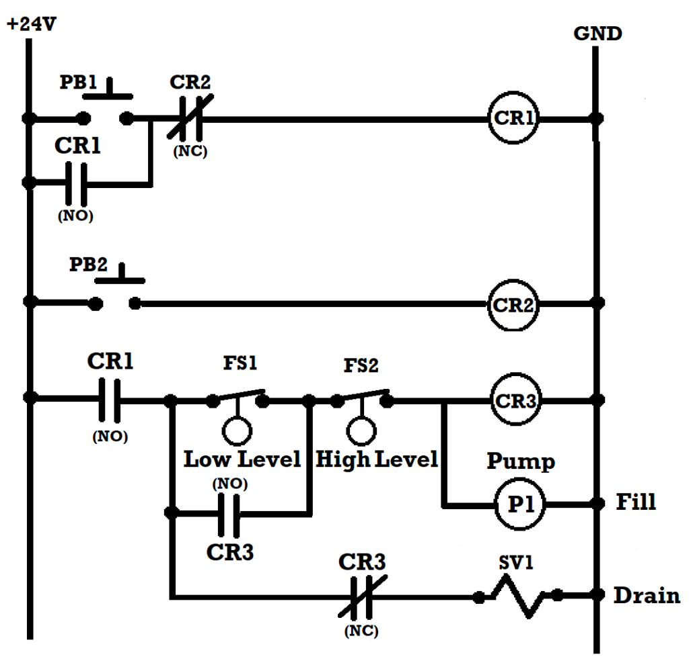
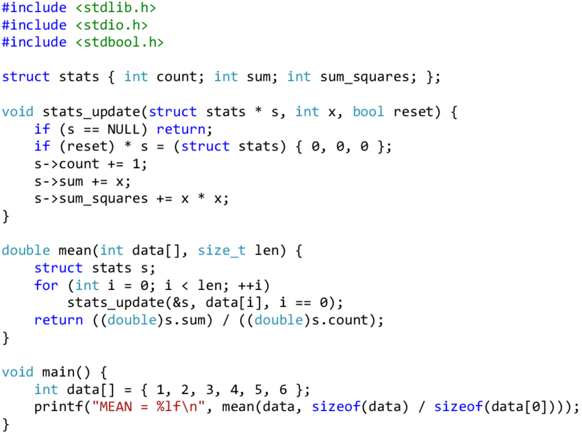
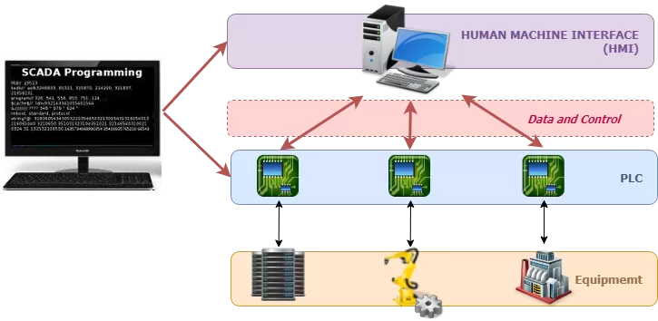

Técnicas de Programação Industrial
A programação industrial é um elemento central na automação e no gerenciamento dos processos de produção. Na Indústria 4.0, que implica na transformação em fábricas inteligentes, quando os conceitos de sistemas físicos abrangentese digitais se fundem, o uso de técnicas de programação moderna assegura flexibilidade, eficiência e exatidão em suas operações. Este capítulo mostra os métodos de programação fundamentais para a indústria atual, lembrando as suas utilizações e vantagens.
Ladder Diagram
O Ladder Diagram é uma linguagem gráfica baseada em diagramas de relés elétricos, sendo amplamente utilizada na indústria devido à sua simplicidade e facilidade de compreensão por profissionais com background em eletricidade.

Texto Estruturado
Uma linguagem de alto nível similar ao Pascal, permitindo programação mais complexa e algoritmos sofisticados para controle industrial.

Sistemas SCADA
O SCADA (Supervisory Control and Data Acquisition) constitui-se como uma ferramenta tecnológica indispensável para profissionais e organizações que atuam no complexo universo dos processos industriais modernos.
